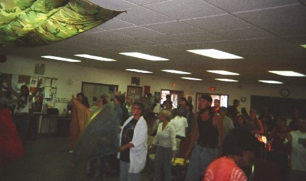
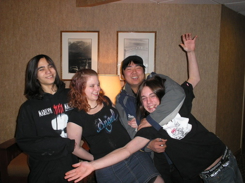

Some of the local musicians from the first meetings in Fort St. John.
BEGINNINGS
In the spring of 2000, 3 teenagers committed suicide in the oilfield town of Fort St. John, B.C.
After a long winter in camp, spring came and I ended up in Fort St. John talking to a social worker at the Salvation Army about the needs of the youth in this city. This social worker told me that 3 teenagers had just committed suicide in the previous month and that in the last year every two months another teen takes their own life. This just broke my heart. I could think of little else after that so I began Revival Fire Youth Meetings in Fort St. John to try to make a difference.
Northernfire hosted this Fresh Fire conference at the Native Friendship Center in 2004.
The first meetings were held at the Salvation Army and this was a weekly Saturday night meeting. A safe place for young and old to hang out. We also had teams go out, we handed out sandwiches and hot coffee on the street and we welcomed the street people into the meetings. We averaged 40 to 50 people a night. Many years later I still get encouraging feedback from people who were encouraged by these meetings. This first stage of ministry for at risk youth lasted almost a year then I led the youth out at Rose Prairie before moving to the Native Friendship Center.
FORT ST. JOHN STREETFIRE
When the city meetings started up again at the Native Friendship Center, I rented the center every Saturday and moved in my drums, guitars and sound system. This work started as a youth group for at risk youth and grew into being a street outreach. I learned how to grow a work that was reaching out to street youth and adults. It was an independent work, a street mission essentially, self financed from my oilfield work.
We had free pizza and pop every Saturday to bring in the needy and hurting and hungry. The music was edgy, loud and driven by electric guitars, bass and pounding drums. It wasn't a place for regular city youth but for the hurting youth and adults of the city. Back then there were homeless youth camping in parks and in wooded areas on the edge of town. They are hidden outcasts from society. Who knows their pain and their stories?
The street people had a lot of issues and rough edges but we learned to accept and love them. I'm so proud of the Rose Prairie youth that helped out in this work. The Native Friendship Centre youth joined with us and as I trained up youth on drums and guitars, music became a great attraction for the young people. Some nights there were three different live bands along with the free pizza and pop.
I started doing this kind of work in Fort St. John because of the teen suicide issue and essentially that was the core value of this work, teen crisis intervention. We had occasions where individuals would come to us very despondent and by talking and counselling with them, we saw lives delivered from death. Sometimes medical science is the only answer but sometimes it's not enough.
Some of the Streetfire youth.